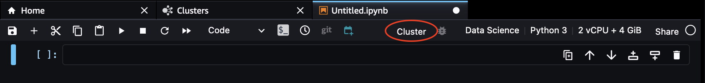

Connect to an Amazon EMR cluster from SageMaker Studio
This section explains how you can connect to an Amazon EMR cluster from a Studio notebook when you use any of the supported kernels.
Connect to an Amazon EMR cluster automatically
To connect to your cluster using the Studio UI, you can either initiate a connection from the list of clusters accessed in Discover Amazon EMR clusters from SageMaker Studio, or from a notebook in SageMaker Studio.
To connect to a particular cluster from your list of clusters
-
Choose the name of the cluster in your list. This activates the Attach to new notebook button.
-
Choose Attach to new notebook. This opens up the images and kernels selection box.
-
Select your image and kernel, then choose Select. For a list of supported images, see Supported images and kernels to connect to an Amazon EMR cluster from SageMaker Studio or refer to Bring your own image.
-
If the cluster you select does not use Kerberos, LDAP, or runtime role authentication, Studio prompts you to select the credential type. Choose from Http basic authentication or No credentials, then enter your credentials, if applicable. A connection command populates the first cell of your notebook and initiates the connection with the Amazon EMR cluster.
Once the connection succeeds, a message confirms the connection and the start of the Spark application.
Alternatively, you can connect to a cluster from a notebook.
-
Choose Cluster at the top of your notebook.
Cluster is only visible when you use a kernel from Supported images and kernels to connect to an Amazon EMR cluster from SageMaker Studio or from Bring your own image. If you cannot see Cluster at the top of your notebook, ensure that your administrator has configured the discoverability of your clusters and switch to a supported kernel.
This opens up a list of available clusters.
-
Select the cluster to which you want to connect, then choose Connect.
-
If you configured your Amazon EMR clusters to support runtime IAM roles and your administrator preloaded your roles in an execution role configuration JSON, you can select your Amazon EMR access role from the Amazon EMR execution role drop down menu. If your roles are not preloaded, Studio uses your Studio execution role by default. For information about using runtime roles with Amazon EMR, see Connect to an Amazon EMR cluster from Studio using runtime IAM roles. When you connect to a cluster, Studio adds a code block to an active cell to establish the connection.
Otherwise, if the cluster you choose does not use Kerberos, LDAP, or runtime role authentication, Studio prompts you to select the credential type. You can choose HTTP basic authentication or No credential.
-
An active cell populates and runs. This cell contains the connection command to connect to your Amazon EMR cluster.
Once the connection succeeds, a message confirm the connection and the start of the Spark application.
Enter the connection command to an Amazon EMR cluster manually
You can manually connect to your Amazon EMR cluster from a Studio notebook whether or not your Studio application and cluster reside in the same AWS account.
For each of the following authentication types, use the specified command to manually connect to your cluster from your Studio notebook.
-
Kerberos
Append the
--assumable-role-arnargument if you need cross-account Amazon EMR access. Append the--verify-certificateargument if you connect to your cluster with HTTPS.%load_ext sagemaker_studio_analytics_extension.magics %sm_analytics emr connect --cluster-idcluster_id\ --auth-type Kerberos --language python [--assumable-role-arnEMR_access_role_ARN] [--verify-certificate/home/user/certificateKey.pem] -
LDAP
Append the
--assumable-role-arnargument if you need cross-account Amazon EMR access. Append the--verify-certificateargument if you connect to your cluster with HTTPS.%load_ext sagemaker_studio_analytics_extension.magics %sm_analytics emr connect --cluster-idcluster_id\ --auth-type Basic_Access --language python [--assumable-role-arnEMR_access_role_ARN] [--verify-certificate/home/user/certificateKey.pem] -
NoAuth
Append the
--assumable-role-arnargument if you need cross-account Amazon EMR access. Append the--verify-certificateargument if you connect to your cluster with HTTPS.%load_ext sagemaker_studio_analytics_extension.magics %sm_analytics emr connect --cluster-idcluster_id\ --auth-type None --language python [--assumable-role-arnEMR_access_role_ARN] [--verify-certificate/home/user/certificateKey.pem] -
Runtime IAM roles
Append the
--assumable-role-arnargument if you need cross-account Amazon EMR access. Append the--verify-certificateargument if you connect to your cluster with HTTPS.For more information on connecting to an Amazon EMR cluster using runtime IAM roles, see Connect to an Amazon EMR cluster from Studio using runtime IAM roles.
%load_ext sagemaker_studio_analytics_extension.magics %sm_analytics emr connect --cluster-idcluster_id\ --auth-type Basic_Access \ --emr-execution-role-arn arn:aws:iam::studio_account_id:role/emr-execution-role-name[--assumable-role-arnEMR_access_role_ARN] [--verify-certificate/home/user/certificateKey.pem]
Connect to an Amazon EMR cluster over HTTPS
If you have configured your Amazon EMR cluster with transit encryption enabled and Apache Livy server for HTTPS and would like Studio to communicate with Amazon EMR using HTTPS, you need to configure Studio to access your certificate key.
For self-signed or local Certificate Authority (CA) signed certificates, you can do this in two steps:
-
Download the PEM file of your certificate to your local file system using one of the following options:
-
Jupyter's built-in file upload function.
-
A notebook cell.
-
A lifecycle configuration (LCC) script.
For information on how to use an LCC script, see Customize a Notebook Instance Using a Lifecycle Configuration Script
-
-
Enable the validation of the certificate by providing the path to your certificate in the
--verify-certificateargument of your connection command.%sm_analytics emr connect --cluster-idcluster_id\ --verify-certificate/home/user/certificateKey.pem...
For public CA issued certificates, set the certificate validation by setting
the --verify-certificate parameter as true.
Alternatively, you can disable the certificate validation by setting the
--verify-certificate parameter as false.
You can find the list of available connection commands to an Amazon EMR cluster in Enter the connection command to an Amazon EMR cluster manually.